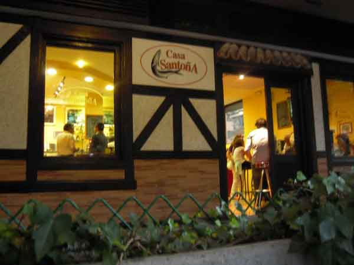

No se puede poner en duda que el trabajo de investigación, localización y deguste llevado a cabo por nuestros infatigables colaboradores, Bitaubé y Merino, ha dado sus frutos. Auténticas anchoas de Santoña en pleno centro de Madrid